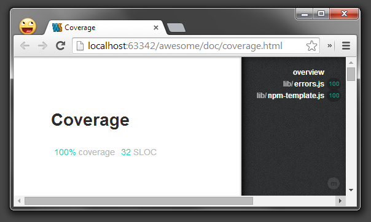
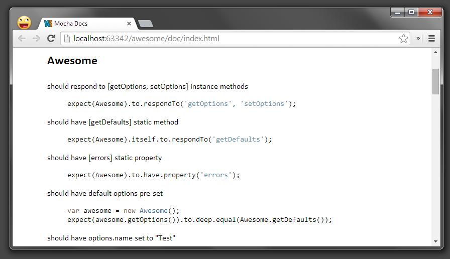

Your browser doesn't support the features required by impress.js, so you are presented
with a simplified version of this presentation.
For the best experience please use the latest Chrome, Safari or Firefox
browser.
Modular, please.
Easy steps to make your do-it-all node app into bunch of small and clean modules.
Part 1
Quick start NPM module from scratch
Required minimum to make your own NPM module
NPM creates initial package.json for us
Add "private" to package.json
To avoid accidental publish to NPM registry
Create index.js
YOu ca use any filename, but same as "main" property in your package.json
And fill it with some code
Commit and push to GitHub
Use our new module in application
Create a new empty app
app.js
Run!
Part 2
We want moar sugar
What is a good NPM module?
- Options
- Custom Errors
- Tests
- More tests
- 100% coverage!
- Documentation
- Build process
What do I think of these?
- Options ⇒ Too easy!
- Custom Errors ⇒ I may not need them...
- Tests ⇒ Sounds like fun, but where to begin?
- More tests ⇒ Look above
- 100% coverage! ⇒ WAT?
- Documentation ⇒ (╯°□°）╯︵ ┻━┻
- Build process ⇒ Mmmmkay...
Init v.2
...or just download source and pick what you like
Configurable module [lib/awesome.js]
Custom Errors [lib/errors.js]
Build process [Gruntfile.js]
+ npm scripts
Tests [test/lib.awesome.js]
Moar tests
100% coverage [doc/coverage.html]
You have it from the start. Just don't give up!

Auto-documentation based on tests
Not perfect but much better then nothing, especially with 100% code coverage and reasonably good messages doc/index.html
